01 // Profile
Dr. Dimitris Panagiotakopoulos holds a Ph.D. and was a member of the "Design, Interior Architecture & Audiovisual Documentation" research laboratory at the University of West Attica, where he also served as an Academic Fellow (Teaching Assistant).
His research interests lie within the broader scope of multimedia science, focusing on interaction design and the production process. His doctoral thesis specifically explores Digital Scent Technology within the Metaverse, investigating how multisensory interfaces can enhance user experience.
He has worked at the European Commission (DG DIGIT) in Brussels, and previously served as an editor and producer for television advertisements in the private sector in Milan, Italy. His background in Digital Humanities was established through internships at the University of Bologna and the Hellenic Ministry of Culture.
His academic background combines creative arts with advanced technology. He holds an Integrated Master in Audio Visual Arts from the Ionian University and an MSc in "Intelligent Packaging: New Technologies and Marketing" from the University of West Attica.
02 // Ph.D. Dissertation
Olfactory Metaverse Experience Design
"But when from a long-distant past nothing subsists... taste and smell alone... bear unfaltering... the vast structure of recollection." — Marcel Proust
THE SHIFT
Transitioning from Techno-anosmia to the 3rd Wave of digital scent, driven by Perceptual Engineering.
THE THEORY
Defining Liminal Interaction: Scent as a connective tissue for Co-Reality between physical and digital worlds.
INNOVATION
Introducing the OloMET Framework and the Spatial Scent GUI for 3D olfactory diffusion control.
ETHICS
Proposal for an Ethical Design Framework for Neurorights, covering the legal gap in mental privacy.
03 // Education
04 // Awards & Scholarships
05 // Teaching Experience
06 // International Mobility

07 // Research Themes & Case Studies
Sacred Futurism
The project presents a series of artworks and their analysis under the theme of Sacred Futurism. It explores the contrast between the sacred and technology by depicting robots in the roles of traditional holy figures, rendered in a Byzantine style.
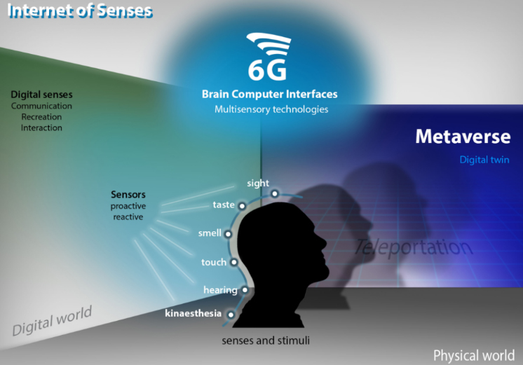
[HCI / REVIEW]Digital Scent Technology & IoS
Exploring multisensory interface technologies for HCI, focusing on digital scent. Reviews current electrical interfaces, chemical odor delivery, and the commercial potential of the Internet of Senses (IoS) and 6G infrastructure.
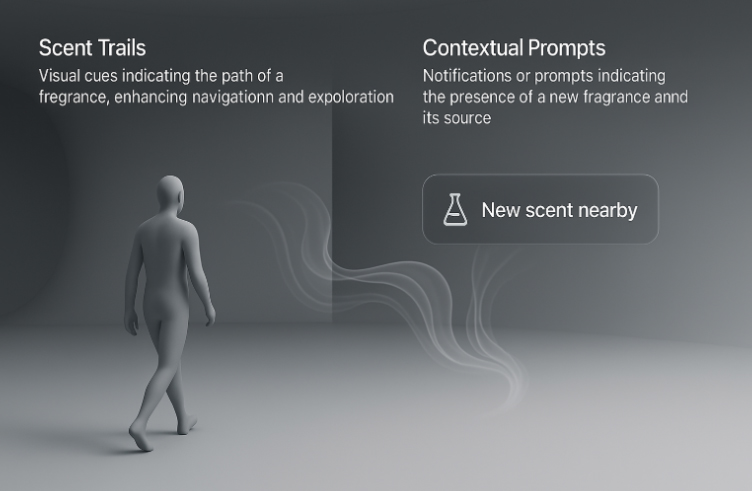
[UX / PROTOTYPE]Spatial User Interfaces
Developing 3D controls for olfactory diffusion in immersive environments. The project addresses the lack of visual tools for designing scent in the Metaverse.
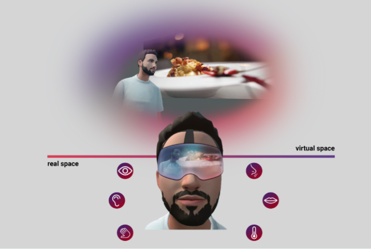
[VR / PUBLIC SECTOR]METAVERSE in Public Sector
Examining the application of Virtual Reality in the public sector. Explores sensory enhancement.
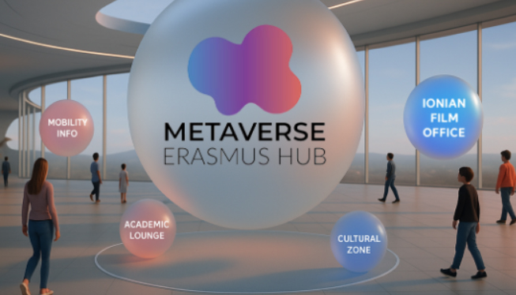
[METAVERSE / EU]Metaverse Erasmus Hub
A proposal to the European Commission for integrating metaverse technologies into Erasmus+.
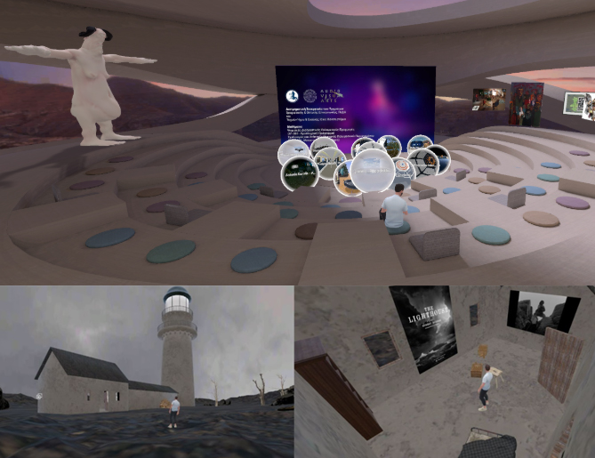
[CASE STUDY]Metaverse in Education
Case study with 20 students using Spatial. Findings indicate increased creativity (50%).
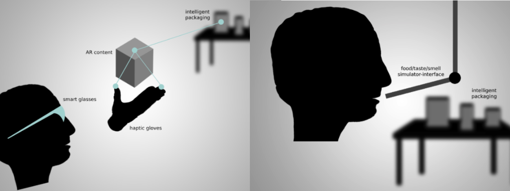
[IOT / TOURISM]INTELLIGENT Packaging
Exploring smart packaging as a key trend in tourism, blending physical and digital worlds.
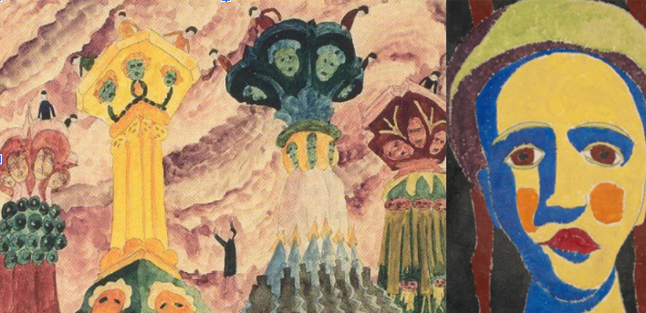
[VR / PSYCHOLOGY]Prinzhorn Collection & VR
Study on psychiatric artworks to explore emotion elicitation and simulate psychosis in VR environments.
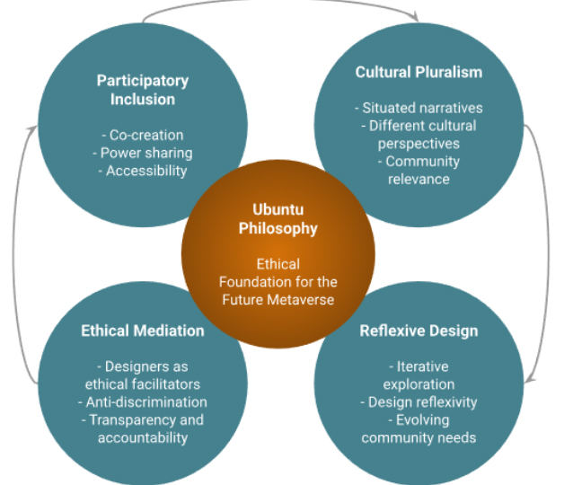
[ETHICS / 5IR]ETHICAL METAVERSE
Participatory Design (PD) as an ethical necessity for building an inclusive Metaverse.
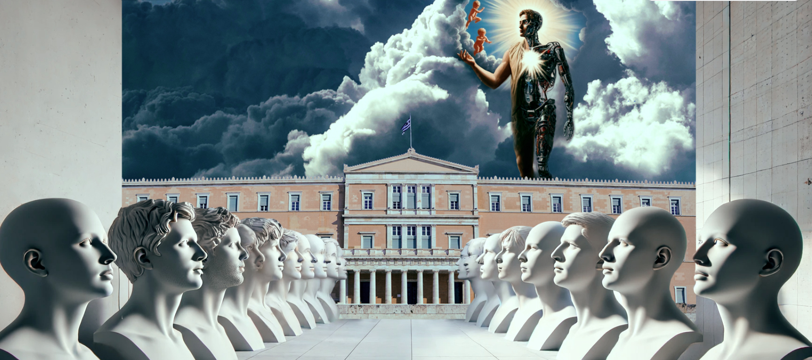
[HYPERTEXT / ART]KAFKAESQUE LABYRINTH
Through an innovative educational approach to Kafka's work, hypertext fiction practices are employed.
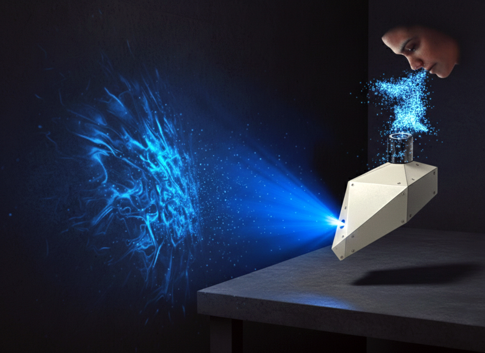
[AFFECTIVE COMPUTING]FLOQ BOX
The Flow Box uses Affective Computing technologies to recognize the user's emotions, represented via holograms.
08 // Art Portfolio
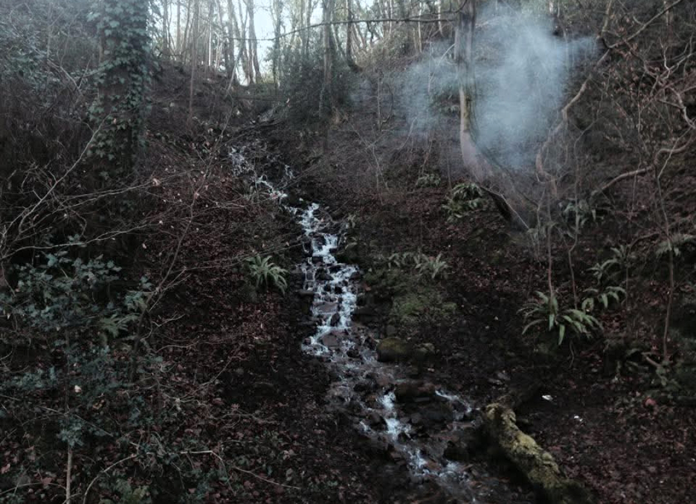
[PHOTOGRAPHY]Flow in the Forest
Landscape composition with running water and atmospheric fog. A study on nature's textures.
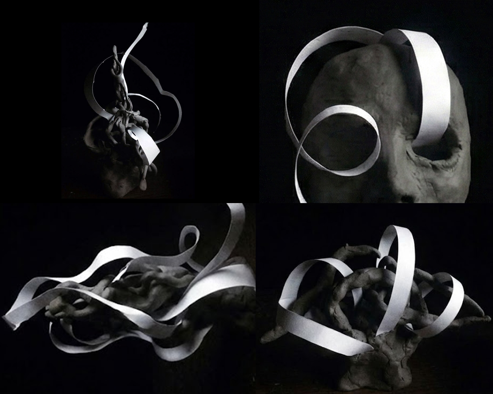
[SCULPTURE]Matter and Motion
Mixed technique with clay and paper strips. The contrast between solidity and lightness.
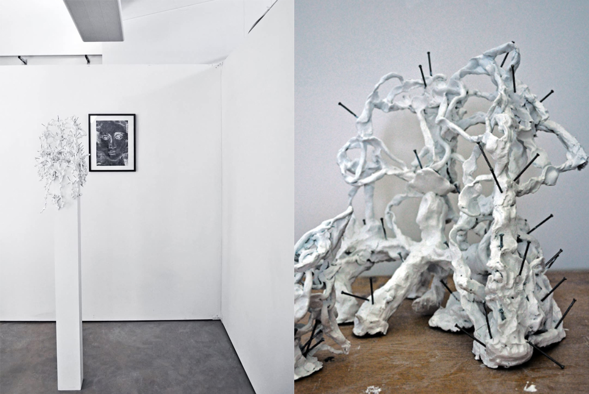
[INSTALLATION]Symbols and Matter
Spatial installation. Clay with metal elements in dialogue with traditional iconography.
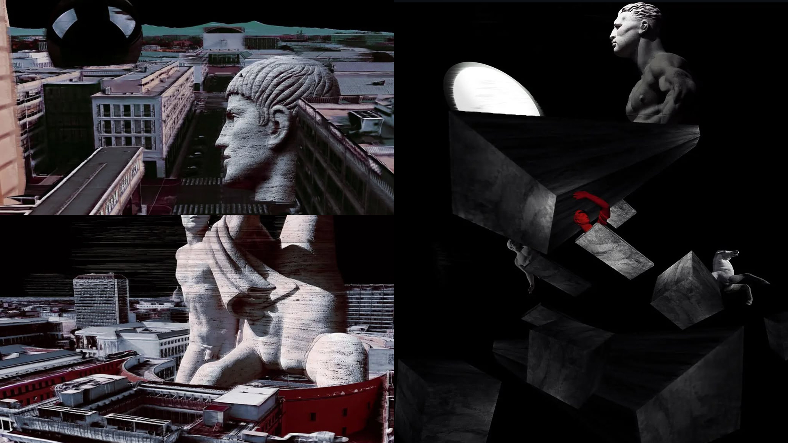
[DIGITAL ART]Urban Fragments
Classical sculpture integrated into a deconstructed urban environment with intense color contrasts.
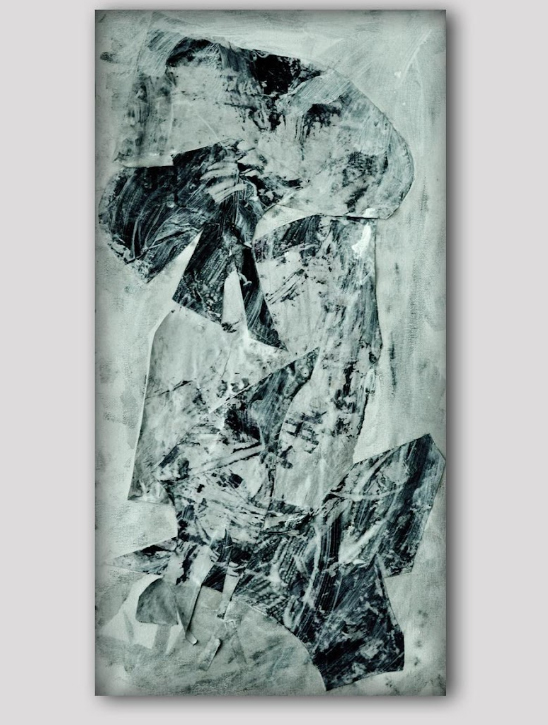
[PAINTING]Abstract 1
Abstract composition on paper. Focusing on the dynamic movement of black color.
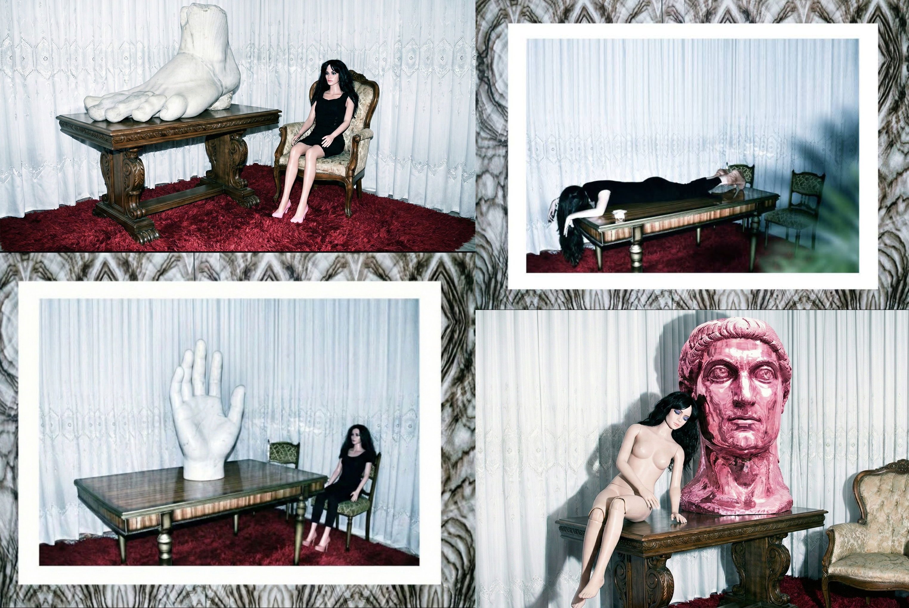
[PHOTOGRAPHY]Uncanny
Photographic record of a human figure in a state of stillness within a domestic environment.
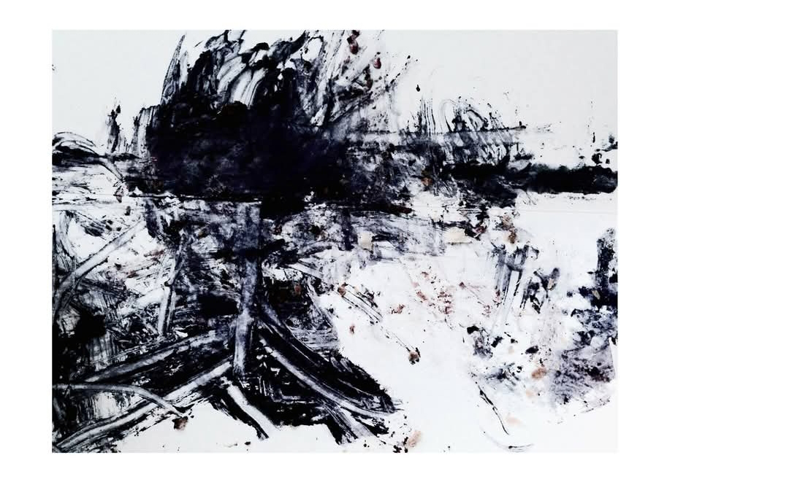
[INK]Abstract 2
An evolution of the gesture series, exploring fluid dynamics and ink dispersion.
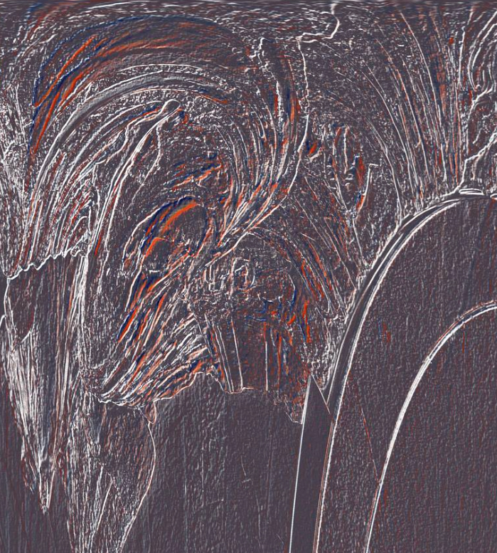
[DIGITAL]Chrome & Void
Digital abstraction focusing on metallic surfaces and the absence of light.
08 // Funded Research Projects
09 // Selected Publications
10 // Academic Service & Editorial Activity
11 // Invited Talks
12 // Languages
Greek (Native), English (Fluent), Italian (Fluent).
13 // Contact
Status: Independent Researcher
Location: Athens, Greece
Email: dpanagiotakopoulos@uniwa.gr
Hours: By Appointment
"Feel free to reach out for research inquiries, collaborations, or student supervision. I am always open to discussing innovative projects and ideas."